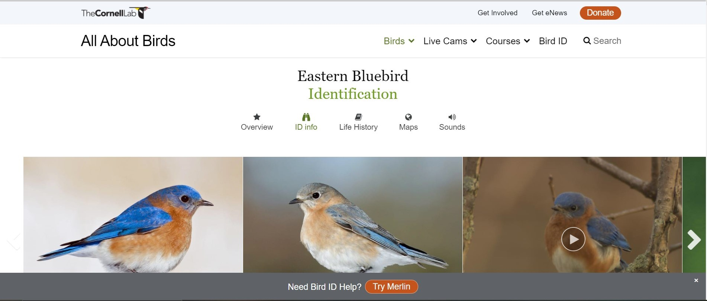

Audubon
is an American National Audubon Society, and one the organization that protects birds and their habitats.
 Allaboutbirds is a free resource that has various kinds of information about birds.
NestWatch is one of the nest-monitoring website that is used for tracking the status of the birds. It has statistics about birds biologies. NestWatch is user firendly and it can be used by anyone.